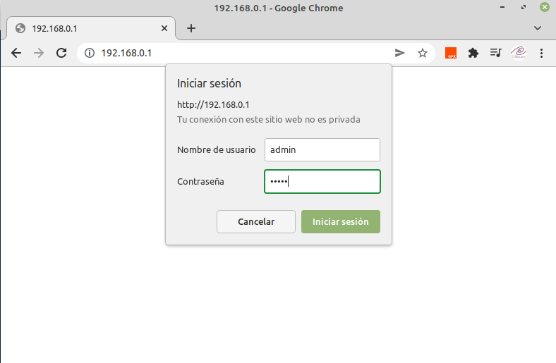
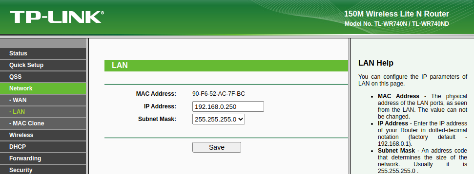
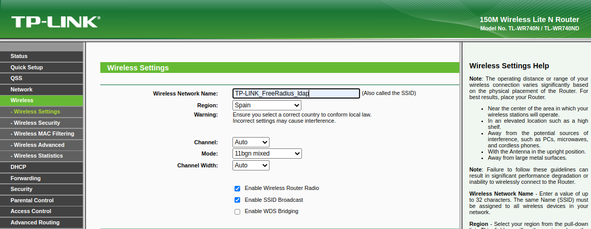
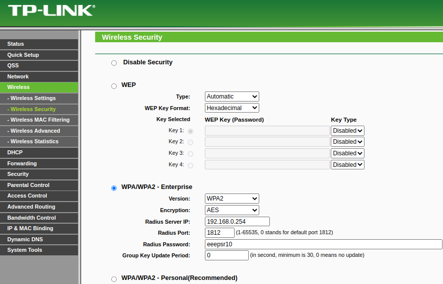
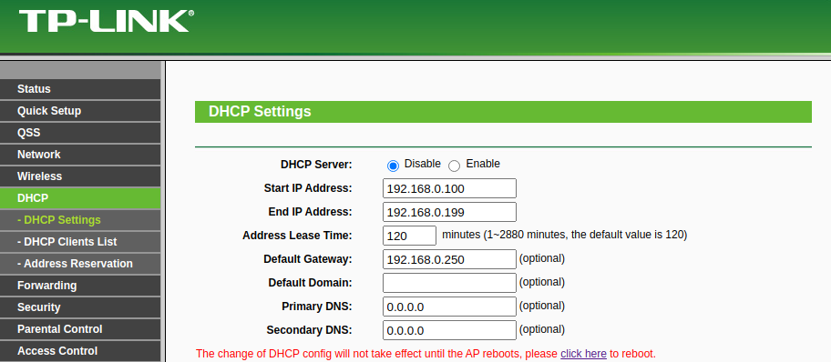
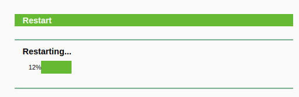
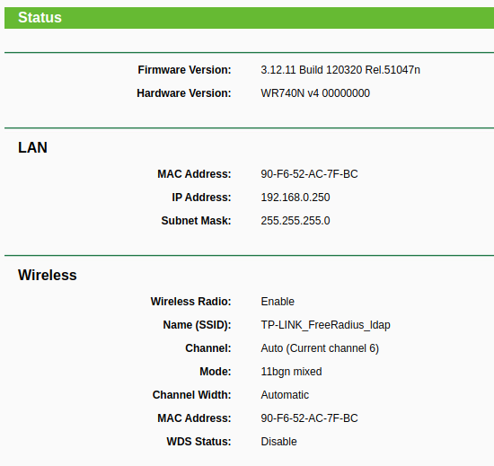

3.2.3 Configuración del cliente Radius
1. Recursos necesarios
- Punto de acceso o router wifi. Para este caso, se tiene un punto de acceso TP-LINK.
- Equipo Ubuntu Server con el servidor openldap instalado y configurado según el punto 3.2.1 y el servidor freeradius instalado y configurado según el punto 3.2.2.
2. Esquema de red
El esquema del conexionado de los equipos, es el que se puede observar en la figura siguiente.
{kind=link}
Figura 1. Esquema de conexionado de la red.
3. Cliente radius con Punto de acceso
En este apartado, se va a configurar un cliente radius mediante un router TP-Link-Router-Wifi-N que en modo AP. Este equipo admite WAP3 Enterprise, por lo que cumple con los requisitos de seguridad para implantar un acceso a la red por Wifi.
En primer lugar, hay que configurar el router TP-Link-Router-Wifi-N para que esté en la red del servidor freeradius, para ello, se inicia sesión con la ip y credenciales de la configuración de fábrica del router cuyos datos son los siguientes:
- ip: 192.168.0.1.
- credenciales: usuario y password admin.

Una vez se accede a la pantalla principal, hay que realizar las siguientes configuraciones:
Configurar ip LAN
En el menú Network --> LAN, hay que configurar la ip de la LAN del router con el valor que para este caso es 192.168.0.252.

Configurar Wireless
En el menú Wireless --> Settings hay que dar nombre al SSID, establecer el canal, etcétera. Para este escenario, se establecen los parámetros que puedes observar en la imagen.

Configurar servidor RADIUS
En el menú Wireless --> Wireless Security hay que vincular el router con el servidor freeradius, para ello, se configura como WPA2/Enterprise con los valores que se pueden observar en la imagen.

Deshabilitar servidor DHCP
Para deshabilitar el servidor dhcp hay que acceder al menú DHCP--> DHCP Settings y seleccionar el option Disable.

Reiniciar el router
Una vez se han definido todos los parámetros, hay que reiniciar el router accediendo al menú System Tools --> Reboot.

Estado
Por último, se consulta el estado para comprobar que las configuraciones que se han realizado, se han consolidado y son correctas.

Para comprobar la conectividad, se puede realizar un ping al Punto de Acceso desde un equipo conectado en la LAN y desde el servidor freeradius.
Obra publicada con Licencia Creative Commons Reconocimiento No comercial Compartir igual 4.0